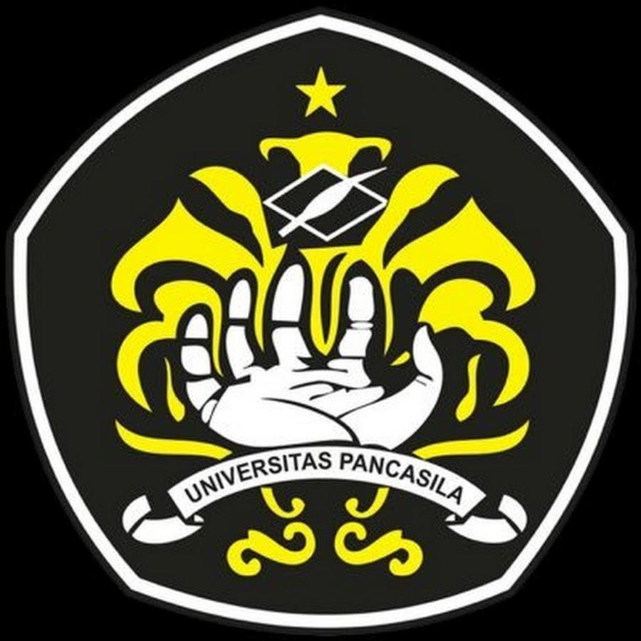

Unit Kegiatan Mahasiswa Photography Keluarga Mahasiswa Universitas Pancasila atau disingkat UKM Photo UP KMUP merupakan UKM yang bergerak di bidang fotografi. UKM ini menjadi wadah bagi mahasiswa untuk mengembangkan minat dan bakat dalam dunia fotografi serta mempelajari berbagai teknik pengambilan gambar. Selain menghasilkan foto yang menarik, anggota PhotoUP juga mempelajari editing, konseptualisasi, teknik pencahayaan, dan estetika ‐ UKM ini juga mengembangkan kemampuan berorganisasi agar anggotanya dapat menjadi fotografer yang lebih terampil dan kreatif.
Mahasiswa yang tertarik dengan dunia fotografi dapat mencari informasi mengenai kegiatan dan kesempatan bergabung melalui kanal resmi UKM atau pihak kampus. Anggota dapat mengembangkan kemampuan fotografi sekaligus belajar bekerja sama dalam sebuah organisasi.
Website Universitas Pancasila:
univpancasila.ac.id
Informasi UKM:
Halaman UKM Universitas
Pancasila
Instagram:
@photoup94
YouTube:
@photoup9415
All rights reserved. © 2026 UKM PhotoUP Universitas Pancasila.